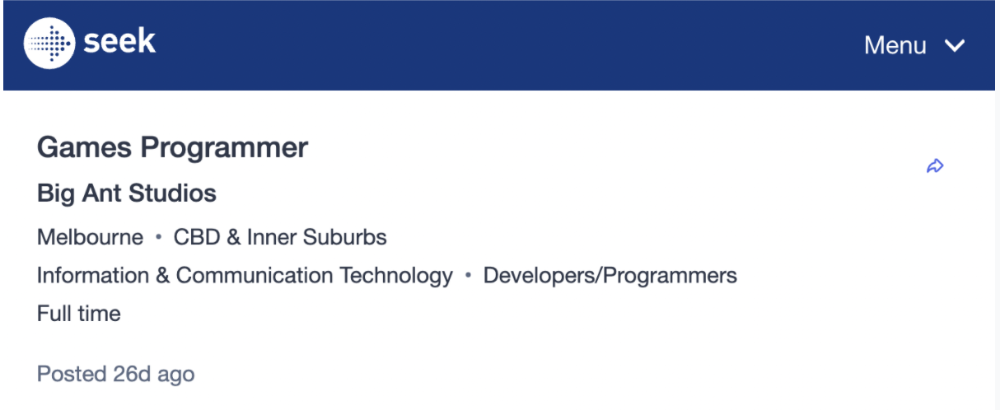
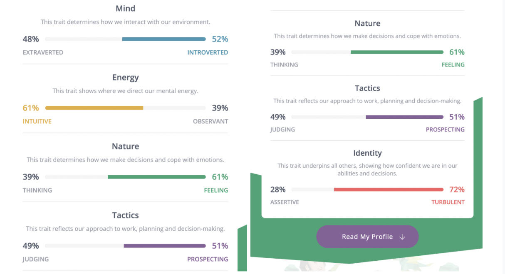

My name is Cheuk Lam Chung(Kandy). Student number is s3655395. Student email is s3655395@student.rmit.edu.au. I am from Hong Kong, I can speak English, Cantonese, Mandarin and a little bit of japanese. My major is Bachelor of Information Technology. I own a puppy whose name is Tom. He is really naughty and cute.
Since I was in high school, I have been very interested in building apps and websites. Because nowaday technology is bringing innovation and convenience to people, everything is relying on technology. Also getting into the IT industry would have a great future. For my IT experience, before Uni, I did not have any experience. While studying at RMIT, I built some applications and websites, even a simple game. I really enjoy doing this, especially building games.
Why did I choose to go to RMIT is because I am attracted by RMIT. Firstful the design of the building is awesome! Does not like a traditional university. Secondly, which is also the main reason, RMIT is innovation and leadership in technology. RMIT is a practical learning experience compared to other universities. I prefer “do it” rather than “think it”. That is why I chose to study IT at RMIT.
During my studies in RMIT, I expect to learn more about programming. I love programming. I want to learn more about writing code and learning more programming languages. For example, HTML, CSS, Java, C++, C+. I would like to learn more about how to code games. I am very interested and enjoy coding. If I could learn more about coding I would get a lot from RMIT university.
Job link: https://www.seek.com.au/job/56013518?type=standard#sol=ce6b4553243338e8ddb2a9195fb77455a0f2b214
I would like to get into the position of coding the game logic. I have mentioned in previous that I love coding. If I could participate in the game I would have a sense of achievement. The requirement for the position needs to be very good understanding of C++. Passionate about playing and making games. Experience in software programming, ideally in the video game industry or any other relevant experience. Ability to work as part of a team, and strong communication skills. I currently have basic knowledge of C++. I am passionate about playing and making games. Ability to anticipate and resolve problems, work as part of a team and quickly learn to use new tools.
The job required a very good understanding of C++. I will gain more knowledge about C++, for example learn in youtube tutorials and try to build some applications using C++, which could learn from debugging. The job also required strong communication skills. I am not good at communication, so I would try to talk to more people, for example students and teachers to gain my communication skills. The most important thing is experience, most companies require experience more than your skill. Therefore I have to gain a lot of experience in coding games. Also I have to try to build more games using different coding languages. I do more, I gain more experience.
Myers-Briggs test report:
EDUCATION PLANNER learning style report: http://www.educationplanner.org/students/self-assessments/learning-styles-quiz.shtml?event=results&A=4&V=10&T=6
Personality test report: https://personalitymax.com/report/?pt=26-21-53-26&name_key=38c2dc3267
I collected some results which are obvious to reflect on myself. The first result, the Myers-Briggs test, Energy part shows that I have 61% of intuitive and 39% of observant. Which means I am intuitive rather than observant. I usually make decisions by following my heart, I rarely think too much. At the same time, for the nature part, I have 61% of feeling and 39% of thinking. This result supports me as the type of a “follow my heart rather than follow my head” person. Furthermore, I got 72% of turbulence and 28% of assertiveness which is an obvious statistic that I am not a confident person. Sometimes I feel stressed in front of people that I have never met. For the learning style test, which shows that I am a visual learner. I learn by reading or seeing pictures. I like to see the picture rather than read the plain text. I always picture the things I have learned in my head. Therefore, seeing a picture is faster for learning things than reading plain text for myself. The last test is for my personality, the result shows that I am 29% of judges and 74% of perceiving. Which means I am adaptable and flexible, also I am a random thinker who likes to keep options open. I usually break out with the unexpected and I am free to change. Furthermore, I got an obvious result on extraversion and introversion, it shows 26% of extraversion and 74% of introversion. This result is supporting the result In the previous test that I am not a confident person. In conclusion, I am a feeling person rather than a thinking person, I usually follow my heart. I am also a visual learner, I learn better with seeing a picture rather than plain text. I am a flexible person and always break up unexpectedly. However, I am an unconfident person.
Since I am a feeling person, I could come up with many ideas for my teammates. Because some people think too much or too care about the rules, causing them difficulty to come up with innovative ideas. I like to come up with ideas without thinking, I think this is my advantage to come up with innovative ideas. Secondly, I am a visual learner. I feel confident to do the task about pictures. For example, drawing and design. I could help my team to achieve this part. Thirdly, I am a flexible person and I am not a judger. I feel free to listen to different opinions and change. Therefore, I rarely argue with my teammates which could make the group always stay calm and think properly. Since I am an unconfident person, I may feel stressed talking to my teammate at the first meeting, which makes it hard to introduce my strengths for the team at the first time.
To form a team for myself. I would be looking for someone who is a different learner beside visual learner. Since I am a visual learner I need someone to make up for the vacancy to form a group as complementary to each other. For example, someone’s strength is understanding well and learning through plain text. Also I would like to form a group with people who have reality thinking to evaluate my imaginative ideas.
This project is a mobile app to help the pet owners who have problems with their pet. The app name is “VetScanner”. This project is using AI technology to analyse the picture by scan. Users are able to take pictures of any part of the pet to let the app scan it, after that the app will explain the problem and provide some advice to the owner if their pet has any problem no matter physically or psychologically. The purpose of VetScanner is to help the owner understand the problem and solution as soon as possible, no more “Google search”. Users are also able to share their experience and 24 hours online consultation.
In Australia, 90% of Australian households have had a pet at some time. Pets to Australians are mostly part of their life. In the last year 84% of dog owners and 68% of cat owners have taken their pet to the vet multiple times a year(Budget Direct, 2022). The statistics show that people have a large demand on vets. Using AI technology can drive down the taken to perform a task as well as faster and smarter. People no longer visit and queue for a vet for a slight problem. I believe that VetScanner is able to bring a lot bentifi and convenience to every pet owner.
For the app feature, users are able to scan their pet using the phone camera. After that the app will analyse what are the problems that the user's pet has. The app separates several parts for users to specifically check the pet. Which has a pet body check, pet emotional and behaviour check. Beside scanning features, users are also able to share their owner experience to other owners in the discussion section. VetScanner has 24Hours online consultation with the AI. The app also provides a GPS map that shows the vet nearby the user. VetScanner has several types of pet home body check tutorials.
For the pet body check which is the most common check. Users are able to find out any surface part of their pet’s problem(which means the app is not able to check inside the pet body), such as pet obesity problems, teeth, ear, mouth, nose and eye problems, paw problems, reproductive organs problems, cyst problem, fur and skin problems. For pet obesity, users are able to take a top view and side view picture of their pet. The app will start scanning the picture to get the pet type, size and breed to evaluate the degree of obesity and provide some advice for the owner. For other checks, users can just take a picture for the part of their pet. For example, my dog has bright red gum. Then I use the app to take a picture of my dog’s gum. After a few seconds, the app will show how serious the gum problem is and why this happens. If the problem is not too serious, the app will suggest that I just need to buy toys for my dogs to chew.
In the pet emotional and behaviour check, it is hard for humans to understand what animals are thinking, that is why they need this feature. Users are able to take a short video of their pet, so that the app can scan the video to see why the pet has this behaviour. For example, My dog is playing with another dog and they look really aggressive. Because I am not a dog trainer so it is hard to understand if they are fighting or playing. If I have VetScanner I can take a short video in the app, then the app will tell me they are fighting or playing.
Users are also able to share their owner experience as a post in the app and allow commenting on the post, so that users can learn from each other in the post. Like, share and save are also allowed in the post. In addition, VetScanner recommends users share their experience of how they take care of pets rather than their daily sharing.
VetScanner provides 24 hours AI online consultation for owners to ask questions about pets problems in text, which is chatroom. The AI can provide the result faster and smarter. To make sure what the user trying to ask AI will ask a couple of questions before answering the user’s question.
VetScanner provided a vet location for users to find a vet nearby. The app has a map feature to show all the vets located close to the user. The map will show the vet location, name, close and opening time, review, direction, photo and vet phone number. The purpose is to make it easier and quicker to find the vet when the owner needs a vet immediately. VetScanner also provides some simple tutorials for owners to have a home body for their pet. It is presented like a video tutorial, which also has tasks to achieve every week for the owner, encouraging owners to give their pet a body check. 617
To build VetScanner which required artificial intelligence platforms and chatbots. Also need the Xamarian app which is a Microsoft open-source framework application. Xamarin uses C# to create apps on both iOs and Android systems. The adventager is Xamarin able to build high-quality mobile apps that look native. For hardware, obviously we need a camera for users to take photos or take video. Also we need a built-in compass and GPS radio for the map feature, we need a compass and GPS radio to show the direction the user is heading and their location to follow the direction to vet. We may need bluetooth radio for users to choose using headset to what home body check tutorial. 109
For this AI scanning app the AI technical skill should be required. Mobile app developer need programming language skills to code the application, such as JavaScript, C++ and C#. For the back-end, framework skill and database management skill, security skill is also required in developing mobile apps. Having back-end computing knowledge can help you identify and correct system issues before it’s known to the public. To present to the user we need user interface design skill, UI can help with its compatibility with other programs and help with attracting people to install it. Also agile development is required, which helps the team increase the speed and efficiency of the development process through better delegation.
If the project is successful, it would help many owners in the world. They will visit the Vet less than before because if they have any problem in their pet they just need to scan it by the app. Which does not mean Vet is unnecessary, pets still need Vet for severe injury. VetScanner only helps to explain to users what happens to their pet. Because people like to take their pet to the Vet even if it is a smell problem or even no problem, which is wasting money and time. Also this app solved the “humans could not understand animals” problem. However, there are potential obstacles in this app. For example, users may not take a photo or video properly so that the app could not scan it properly leading to the wrong result.
Software Testing Help, 2022, “10 Best Artificial Intelligence Software (AI Software Reviews In 2022)”, blog, viewed 20th March 2022, https://www.softwaretestinghelp.com/artificial-intelligence-software
Indeed Editorial Team, 2021, “Mobile App Developer Skills: Definition and Examples”, blog, viewed 20th March 2022, https://www.indeed.com/career-advice/resumes-cover-letters/mobile-app-developer-skills
Budget Direct, 2021, “The cost of owning a pet in Australia”, website, viewed 19th March, https://www.budgetdirect.com.au/pet-insurance/guides/real-cost-owning-pet-australia.html
HCL, 2021, “What are the advantages of Artificial Intelligence?”, website, viewed 19th March 2022, https://www.hcltech.com/technology-qa/what-are-the-advantages-of-artificial-intelligence
CA Staff Blogger, 2021, “The Best Tools for Mobile App Development in 2021, blog, viewed 20th March 2022, https://www.codeauthority.com/Blog/Entry/mobile-app-development-tools-2021